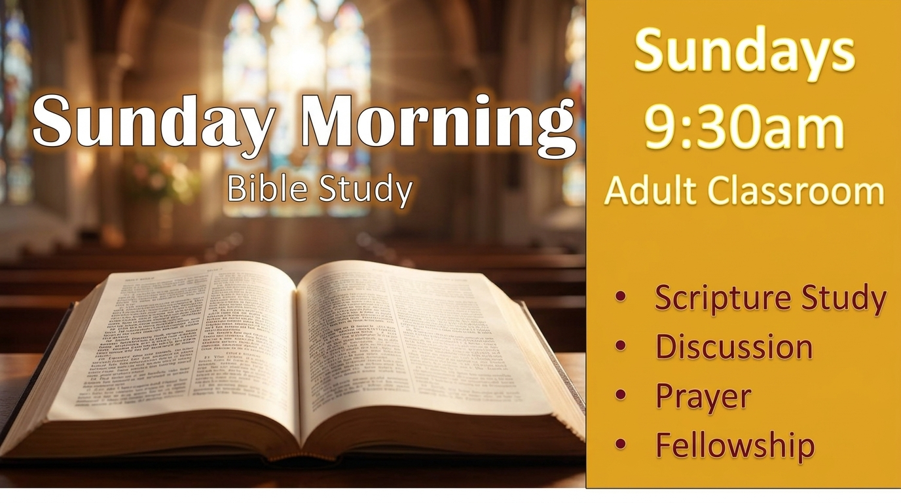
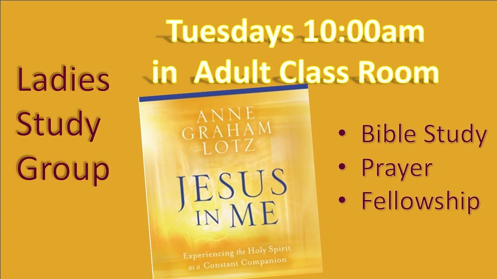

Discover vibrant places to connect with others, study God's Word, and grow together at every age and stage of life.

We love children! Our heart is to partner with families to help kids know, love, and follow Jesus Christ. Every Sunday morning during our 10:30 AM worship service, we offer safe, age-appropriate environments led by trained and background-checked volunteers.

Loving care for infants and toddlers in a clean, quiet, and secure nursery room with Amy Greenwalt.

Engaging Bible lessons, interactive crafts, and worship led by Children's Director Susan Blower.
Scripture comes alive when we study together, share with one another in curiosity, and grow in God's wisdom.

Prior to Sunday morning worship, adults and students gather for in-depth, chapter-by-chapter biblical exploration with open discussion and prayer.

Seasonal Fall & Spring Wednesday evening studies designed to refresh your spirit in the middle of the week through scripture and candid fellowship.

A loving circle of women who meet for topical Bible studies, mutual encouragement, shared prayer requests, and heartfelt support.
Christian friendship is one of God's sweetest gifts. Join in any of our regular fellowship circles!

Held the first Sunday of every month directly following morning worship. Bring a dish to share and invite a friend!

Wholesome breakfast food, devotional insights, and great brotherly conversation for all men in the church family.

Handcrafting quilts, blankets, and hats with prayer for sick, hospitalized, and shut-in community members.

Games, light lunches, fellowship, and great laughs designed to foster friendships across our entire church congregation.
Volunteers are key to creating a welcoming and effective ministry. Those who serve are the heartbeat of our church. From kids' ministry to usher teams, greeters, hospitality, outreach, and pastoral care, we thrive when people step up to serve.
Coordinator: Chet Mullins. Welcoming worshippers, distributing bulletins, and assisting with offering collections.
Greeting every family with warm Christian kindness at our front doors and sanctuary foyer.